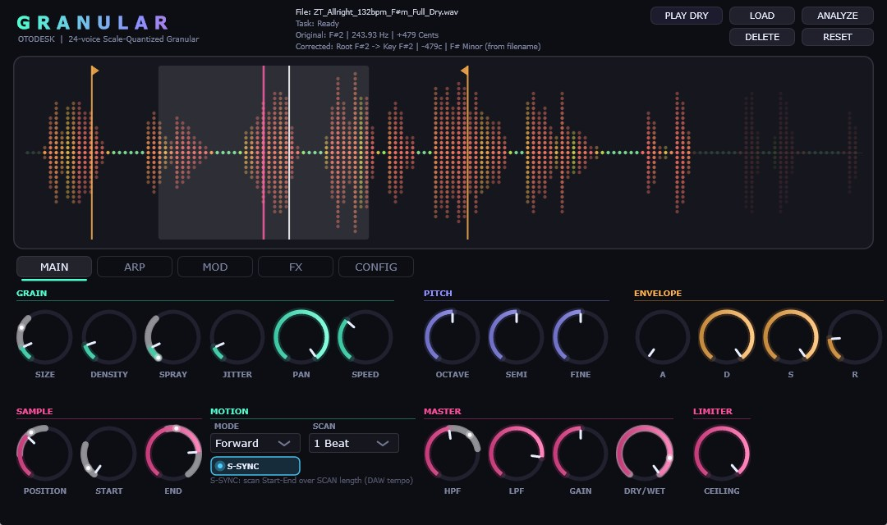
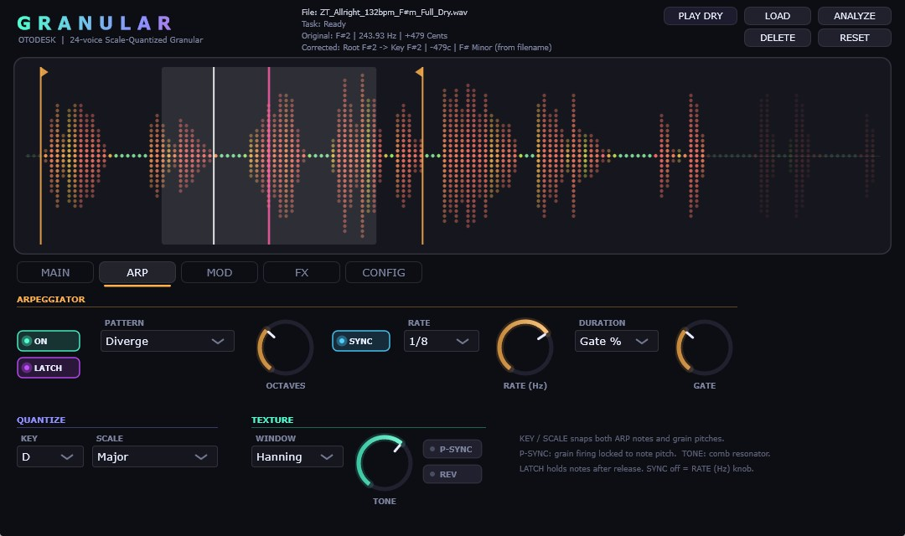
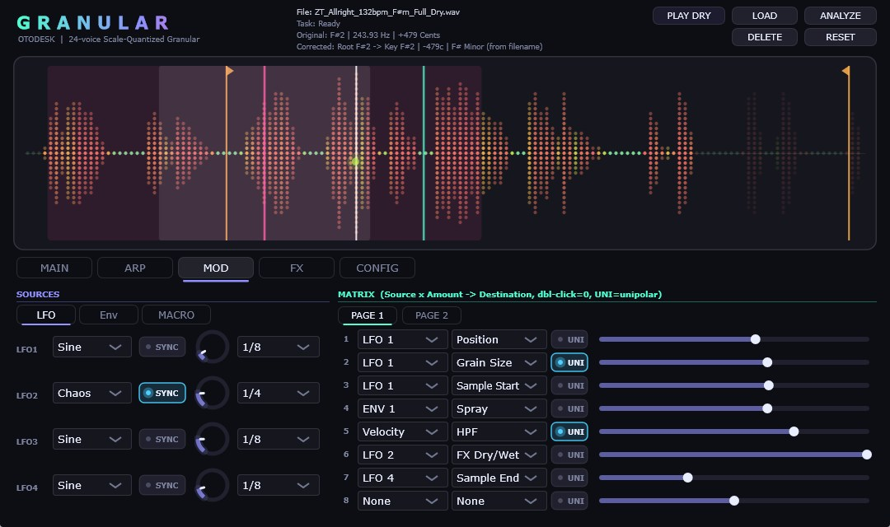
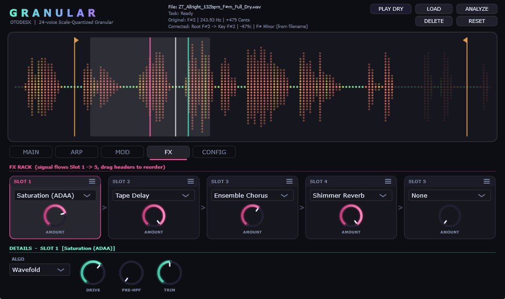
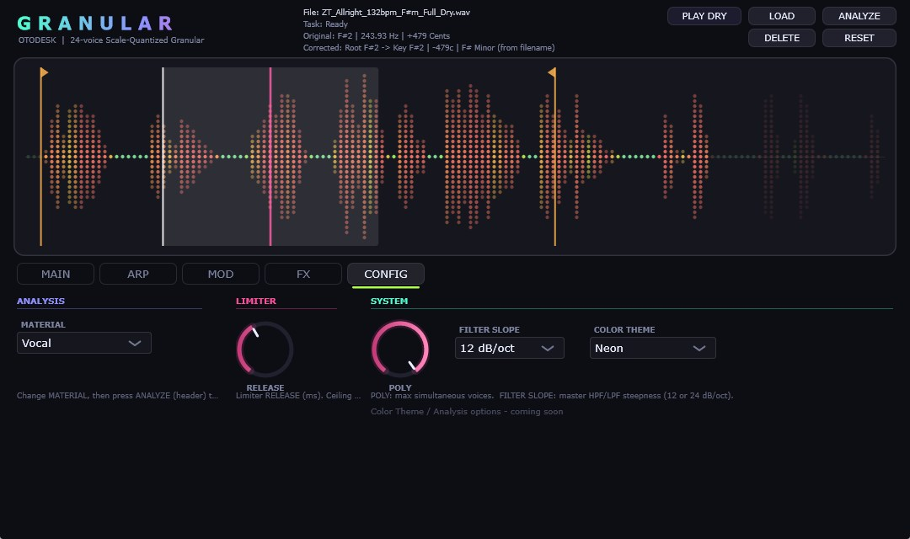

24ボイスのグラニュラーシンセサイザー。好きなサンプルを粒状にして音を再構築します。ベースがPADになったり、声がベースになったり。変調後に適用されるスケールクオンタイザーにより、どれほど過激に音程を変調しても常にキーに収まります。





| カテゴリ | パラメーター | 範囲 | 概要 |
|---|---|---|---|
| Grain Engine | Size / Density / Spray | 0.02–0.5s / 0.25–64× / 0–1.0 | 4点エルミート補間、1200グレイン予算 |
| Pitch & Quantize | Scale Quantizer / P-SYNC | 17 Scales / Key Auto or C-B | 変調後に最終ピッチをKey+Scaleへ強制スナップ |
| Tone Resonator | TONE Comb Filter | 0.0 – 1.0 | 演奏ノートに同調する Karplus-Strong レゾネーター |
| Modulation | 11 Sources × 23 Dests | 16 Slots (Uni/Bi) | LFO (0.02–20Hz), ループ可能 ENV (ADSR) |
| FX Suite | 5 Reorderable Slots | Sat (10 algo) / Chorus / Delay / Freeze / Reverb | マスター Dry/Wet 制御対応 |